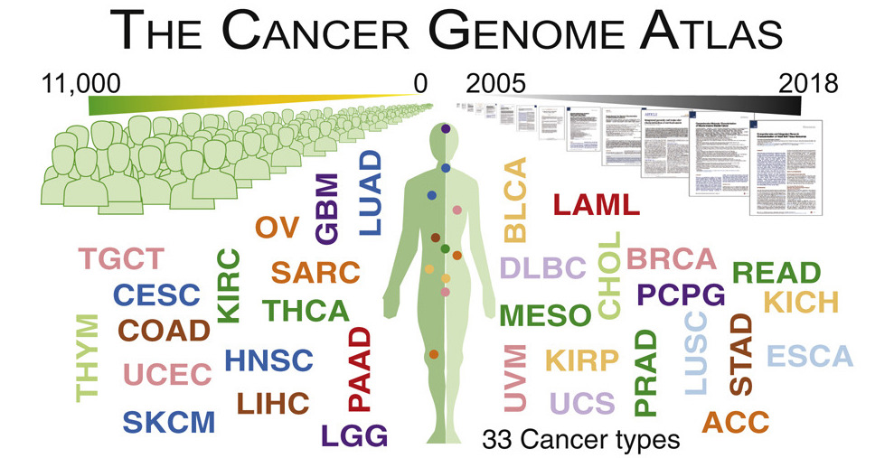

Read PDF Written Report here
Breast cancer becomes the second leading cause of cancer death in women, so it is necessary for us to analyze the data of breast cancer patients and to discover the pathway and mechanism of breast cancer-related genes due to the high prevalence and mortality rate. Since breast cancer occurs common in women but rare in men, so in this project I focus on the female patients. Among the factors in the clinic data, I choose age, pathologic stage, and vital status as factors to examine how will they affect the female patients’ outcome when they develop breast cancer.
The Cancer Genome Atlas Program (TCGA) is a cancer genomics program that collects over 20,000 cancer tissue samples and matches them with normal samples spanning over 33 cancer types (National Institute of Health). The data was sourced from TCGA with the TCGAbiolinks library using accession code “BRCA.”

I first examine the distribution of stages in different age groups. I created a bar plot to see how the pathologic stage distributes between young female patients and old female patients.
I find that in each category, most female patients are in stage IIA or stage IIB, whereas stage II and stage III have the least number of people. Stage II means the breast cancer is growing, but it is still contained in the breast or growth has only extended to the nearby lymph nodes. This stage is divided into groups: Stage IIA and Stage IIB. The difference is determined by the size of the tumor and whether the breast cancer has spread to the lymph nodes. Stage III means that the cancer has spread from the breast to lymph nodes close to the breast or to the skin of the breast or to the chest wall.
What about the relationship between pathologic stage and vital status? I create the bar graph to see the distribution of vital status of female patients in each pathologic stage.
Here, we can see that all female patients in stage IB and stage II are alive, whereas the proportion of female patients whose vital status is dead at stage III, and stage IV is high.
Then I want to combine age, pathologic stage, and vital status together, to see the relationship between pathologic stage and age in female patients’ vital status.
From the graph, it is hard to tell that whether aging affects the female patient’s vital status. But for the pathologic stage, especially in stage IV, the proportion of patients dying is increasing. If we consider the age factor in stage IV, we can see that the proportion of old patients whose vital status is dead is the highest.
In many cancer studies, the main outcome under assessment is the time to an event of interest. If the event occurred in all individuals, many methods of analysis would be applicable. However, it is usual that at the end of follow-up some of the individuals have not had the event of interest, and thus their true time to event is unknown. Further, survival data are rarely Normally distributed, but are skewed and comprise typically of many early events and relatively few late ones. It is these features of the data that make the special methods called survival analysis necessary.
Therefore, I did survival analysis in female patients and examined the survival difference between young and old patients in each pathologic stage. Here, I choose the two most representative stages to explain.
From the Keplain Meier Plot, we see that with time goes by, the survival probability of young female patients is higher than that of old female patients.
From the Keplain Meier Plot, we see that the survival probability of young patients dramatically decrease around time at 1000 days. In the contrast, the survival probability of old patients dramatically decreases around time goes to 4000 days. The biggest reason causing this is due to the small sample size. So the plot becomes random distribution and less likely to get the result.
First, we examine the structure of our clinic data with three factors: age, pathologic stage, and vital status. In general, the rate of death was higher for female patients in the higher state (for example, in stage IV). At the same time, for female patients in the same stage, the rate of death was higher for old patients. When we examine the survival probability in each stage, we cannot get a general conclusion since the population in each stage is varied. But if we see the survival analysis in stage II and stage III (with the most population), we see that the survival probability of young female patients is higher than that of old female patients.
The research still faces many limitations, including scarce sample size, and more quantitative data to diagnoze different stages, etc. For my future research, I will continue to get more data for female breast cancer patients and construct a more convincing survival analysis. Also, I want to deeply explore the reason to cause the difference in survival probability in different pathologic stage.
Copyright © 2022, Mengdi Chai.